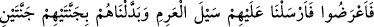
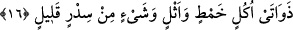

feyizlerdir.
Eşyâdan tayyib olan, duyu organlarının lezzet aldığı şeylerdir. İnsanlardan tayyib olan
cehâlet, fısk ve çirkin amellerin necâsetinden temizlenen; ilim, îman ve güzel
davranışlarla bezenen kimsedir.
Büyüklerden birisi şöyle der: “Güzel memleket” tevhid tohumunu ve “Lâ ilâhe illlah”
kelimesini kabul eden insanlık beldesidir. “çok bağışlayan bir Rab!” mağfiret nuru ile
dostlarının ayıplarını örter ve ma’rifetinin izzeti sebebiyle onların günahlarını
bağışlar.”
Yine o dostları sebebiyle kullarının bir çoğunun günahlarını bağışlar ve iyiliklerini
kabul eder.
Rivâyet edilmiştir ki Abdullah b. Mübârek (r.a.) bir yıl Harem-i Şerif’te haccı
tamamlamıştı. Rüyasında iki meleğin geldiğini gördü. Biri diğerine “Bu yıl hac için kaç
kişi toplandı?” diye sordu. Diğeri şöyle dedi: “Üç yüz bin.” Ben: “Kaç kişinin haccı
makbul oldu?” diye sordum. “Hiç kimsenin haccı kabul olmadı.” dediler. Abdullah
şöyle der: Bu sözü işitince, üzerime üzüntü çöktü. “Bütün insanlar cihanın dört bir
tarafından sıkıntı ve meşakkat çekerek gelmişlerdi, hepsi zâyi oldu.” dedim. Melekler:
“Dımaşk’ta Ali b. Muvaffak adında bir ayakkabıcı var; buraya gelememiş. Ancak onun
haccı kabul edildi. Bunun yaptığı iş sebebiyle herkesinki kabul edildi.” dediler.
Ali b. Muvaffak der ki: “Hac yapmak için üç yüz elli dirhem biriktirdim. Yanıma
hamile bir kadın geldi ve “Şu evden güzel bir yemek kokusu geliyor. Git de bu yemekten
bana biraz getir ki çocuğum düşmesin.” dedi. Ben de gittim ev sahibine durumu anlattım.
Ev sahibi ağladı ve “Benim de çocuklarım var. Bir haftadır hiçbir şey yemediler. Ben
de bugün kalkıp onlara ölmüş bir merkebin etinden bir parça getirdim. Ev halkı onu
pişiriyorlar. Biz mecbur olduğumuz için bu bize helal, ancak sana haramdır. Onu sana
nasıl verebilirim ki?” dedi. Ali b. Muvaffak der ki: “Onun bu sözünü duyunca, gönlüme
ateş düştü. Hac için biriktirdiğim meblağı ona verdim ve “İşte benim haccım bu!”
dedim.”
Allah Teâlâ onun bu iyiliğini en güzel şekilde kabul etti. Allah bütün hacıları ona
bağışladı (onun hatırına onların haccını da kabul etti).
İhsan etmekle gönlü huzura erdirmek,
Her konakta bin rekât namaz kılmaktan yeğdir.
16. Ama onlar yüz çevirdiler. Bu yüzden üzerlerine Arim selini gönderdik.